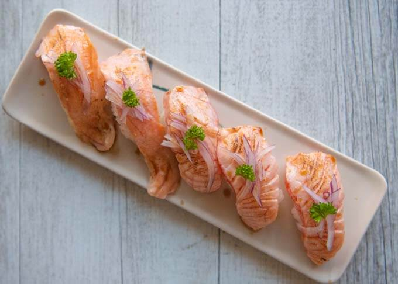
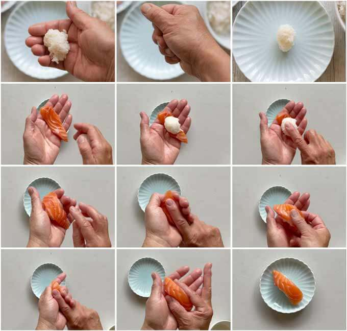
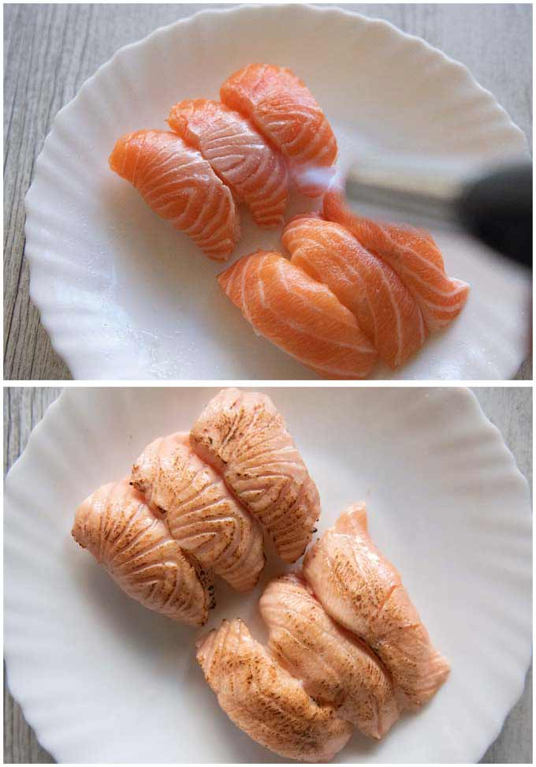

Aburi Salmon Nigiri Sushi

Seared Salmon Nigiri (Aburi Salmon) is one of the most popular nigiri
sushi items at sushi train restaurants. The one with a sweet soy-based
sauce brushed over the seared salmon is particularly popular. By searing
it, the salmon becomes sweeter and more delicious. The faint aroma of
charred flesh is also appetising.
Ingredients
-
Vinegar rice made specifically for sushi – this is called ‘shari
(シャリ)’ in the sushi world.
-
Sashimi quality salmon fillet – slice into the size suitable for nigiri
sushi.
-
Tare (タレ) – thick, sweet soy-flavoured sauce, which consists of soy
sauce, mirin and sugar.
-
Tezu (手酢) – mixture of rice wine vinegar and water, used to wet your
hands before handling the sushi rice.
-
Garnish (optional) – thinly sliced red onion and sprig of parsley.
Preparation Time
Prep Time 15 Minutes | Cook Time 5 Minutes | Total Time 30 Minutes
Instructions
Preparation
-
Put all the Tare ingredients in a small saucepan and bring it to a
boil. Bring the heat down and simmer gently until the liquid reduces
to about half of the original quantity.
-
Put the Sushi Rice Vinegar ingredients in a bowl and mix well until
the sugar is dissolved.
-
Sprinkle the Sushi Rice Vinegar over the hot rice in a bowl and mix
using a spatula. Move the spatula in a cutting motion so that you
don’t break the rice grains. Cover the bowl with a wet kitchen
towel/kitchen paper.
-
Slice the salmon fillets into 3-5mm / ⅛-3⁄16" thick pieces using the
sogi-giri (slant cutting) method.
- Mix the Tezu ingredients in a small bowl.
Making Nigiri Sushi
- Wet both palms with the tezu, massage hands ensuring that all fingers including between the fingers are wet (note 5). Then clap your hands once so that the excess liquid will be splashed and eliminated.
- Take 1/12 of the rice (about 15g / 0.5oz) in your right hand and squeeze the rice gently to make a ball (about 3-3.5cm / 1¼-1⅜" in diameter).
- Place a salmon piece across the proximal phalanx (base section of the fingers) of your left hand (for the right hander).Place the rice ball on the centre of the salmon piece, then make a dent in the centre of the rice with your right index finger (to air the rice).
- Turn the sushi over by rolling it towards the tips of your fingers and move it to where the salmon piece was placed initially.
- With your right thumb and the index finger, hold the sides of the sushi including the edge of the salmon piece, and squeeze very gently (to shape and wrap the sushi with the salmon).
Making Aburi Salmon Nigiri Sushi
- Place the salmon nigiri pieces on a heat resistant plate or a tray. Using a blowtorch, sear the surface of the salmon until it begins to lightly char.
- Brush the tare over the salmon a couple of times, then place a small amount of sliced red onion topped with a tiny sprig of parsley if using.

Step-by-setp guide for preparing the sushi

Searing the Salmon Nigiri Sushi